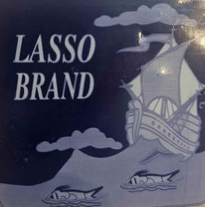

Trade Mark Journal No.2025/018 2 May 2025
UK00004161516 17 February 2025 (29)

- Class 29
- Dried fruits; Canned fruits; Fruits, canned; Frozen fruits; Fresh unripened cheeses; Fresh meat; Pickled fruits; Bottled fruits; Candied fruits; Dried fruit; Fruits, tinned; Frozen fish; Frozen cooked fish; Fish products being frozen; Frozen seafood; Frozen shellfish; Meat, frozen; Frozen meat; Fish; Canned fish; Fish, canned; Dried fish; Dried fish meat; Frozen vegetables; Frozen chicken; Frozen poultry; Tinned fish; Fish, tinned; Tuna fish; Fish fillets; Fillets (Fish -); Tuna fish [preserved]; Cooked fish; Frozen chips; Salted fish; Fish (Salted -); Frozen eggs; Grilled fish fillets; Frozen turkey; Steaks of fish; Frozen spinach; Fish sausages; Pickled fish; Boiled and dried fish; Frozen meat products; Processed fish; Deep frozen chicken; Bottled fish; Frozen meals consisting primarily of fish; Processed fish roe; Smoked fish; Fish cakes; Fish croquettes; Fish steak; Fish, preserved; Preserved fish; Fish spawn (Processed -); Processed fish spawn; Fish maw; Fish with chips; Fish jellies; Quenelles [fish]; Foods made from fish; Chilled meals made from fish; Fish sticks; Fish fingers; Sea trout roe for food; Foods prepared from fish; Mousses (Fish -); Fish mousses; Fish, seafood and molluscs spreads; Artificial fish roes; Fish meat floss; Sea salmon roe for food; Fish stock; Fish roe, prepared; Dishes of fish; Fish preserves; Tuna fish, not live; Tuna fish [not live]; Dried seafood; Fish, seafood and molluscs, not live; Frozen frog legs; Fish crackers; Fish, tinned [canned (Am.)]; Fish balls; Chilled foods consisting predominately of fish; Dried clam meat; Frozen sweet corn; Frozen celery cabbages; Canned seafood; Freeze-dried vegetables; Canned vegetables; Vegetables, canned; Dried vegetables; Vegetables, dried; Canned sliced vegetables; Vegetables, tinned; Tinned vegetables; Cooked vegetables; Vegetables, cooked; Dehydrated vegetables; Lyophilised vegetables; Frozen meals consisting primarily of vegetables; Salted vegetables; Pre-cut vegetables for salads; Pickled vegetables; Grilled vegetables; Lyophilized vegetables; Pre-cut vegetables; Quick-frozen vegetable dishes; Vegetables, processed; Processed vegetables; Bottled vegetables; Fermented vegetables; Frozen prepared meals consisting principally of vegetables; Vegetables, preserved; Preserved vegetables; Peeled vegetables; Canned sliced fruits; Processed fruits, fungi, vegetables, nuts and pulses; Pre-cut vegetable salads; Vegetables (Prepared -); Cut vegetables; Vegetables, tinned [canned (Am.)]; Cooked fruits; Mixed vegetables; Vegetable salads; Salads (Vegetable -); Frozen meals consisting primarily of meat; Canned spinach; Canned cooked meat; Extracts of vegetables [juices] for cooking; Vegetables pickled in soy sauce; Prepared dishes consisting primarily of fishcakes, vegetables, boiled eggs, and broth (oden); Vegetables preserved in oil; Preserved vegetables (in oil); Frozen meals consisting primarily of chicken; Fermented vegetables (kimchi); Fresh poultry; Fresh chicken; Fresh turkey; Meat; Dried meat; Canned meat; Meat, canned; Meat and meat products; Cooked meat; Salted meat; Minced meat; Freeze-dried meat; Bottled cooked meat; Sliced meat; Tinned meat; Meat, tinned; Steaks of meat; Fried meat; Sausage meat; Turkey meat; Poultry; Poultry salads; Cooked poultry; Deep-frozen poultry; Prepared meals made from poultry [poultry predominating]; Roast poultry; Fish steaks. .
Khayrul Alam